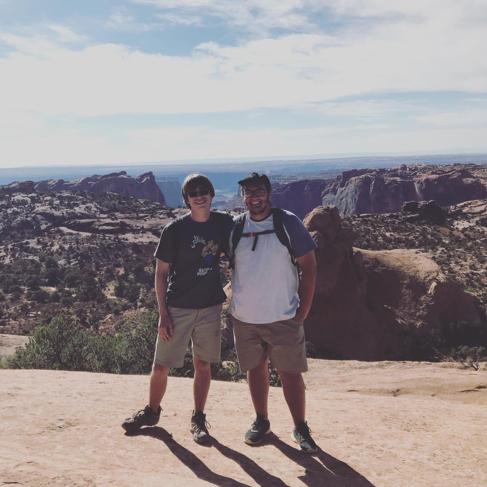

In the summer of 2020, my friend RJ and I went on a month long road trip across the United States with the goal of seeing as many national parks as we could. It was an eye opening experience, filled with stories of great sights, strange strangers, isolated camping sites and sleeping on public benches. Here are the places we visited in chronological order:

Photo Credits: Dylan Stukins (2020)